Модуль 1
Аудит вашего бизнеса
- Какие тенденции развития рынка онлайн-образования?
- Какие антикризисные решения сейчас актуальны?
- Нужно ли выходить на международные рынки?
- Как увеличить свою долю в проекте и в чём ценность продюсера-предпринимателя?
- Как найти слабые места в бизнесе и сделать так, чтобы все работало как по часам?
Что будем изучать?
- Как устроен рынок онлайн-образования в 2022 году
- Карта продюсерских компетенций: как вырасти в «звездного» продюсера с высокой долей в проекте
- Аудит текущей ситуации: поиск слабых мест проекта и причин их появления
- Построение стратегии изменений в продукте, маркетинге, продажах, команде, вебинаре
Результат
- Оцените свои нематериальные активы и построите план индивидуального развития hard и soft skills
- Сделаете аудит своего бизнеса, выявите сильные и слабые стороны, и поймете куда направить фокус внимания для масштабирования
- Составите план развития бизнеса по направлениям на ближайший год
Дополнительные материалы
- Тестирование профессиональных навыков, личных качеств и расшифровка от специалиста-профориентолога
- Определение «риск-профиля» предпринимателя
- Персональная карта профессионального развития продюсера
- Шаблон для аудита вашего бизнеса
- 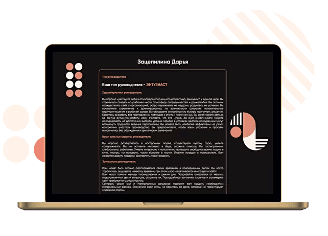
Модуль 2
Мышление предпринимателя
- Как перестать бояться больших результатов, отвественности и масштаба?
- Как научиться быть эффективным в неопределённости и перестать бояться «потерять всё»
- Как отпустить контроль и сфокусироваться на главном?
- Как создавать себе контекст неизбежного роста и масштаба?
- Как научиться доверять партнеру, команде и миру, чтобы перестать тащить всё на себе?
- Как не выгорать от бизнеса, найти свой жизненный баланс, иметь высокий уровень ресурса и заниматься им в кайф?
Что будем изучать?
- Почему именно мышление, а не инструменты определяет результаты
- Стеклянные потолки дохода — откуда они берутся и как их пробивать?
- Аудит текущей ситуации: поиск слабых мест проекта и причин их появления
- Как отслеживать свои установки и убеждения и менять их?
- Контекст неизбежного роста — как создать себе невероятный источник мотивации и ресурса?
- Баланс в бизнесе — как сделать так, чтобы бизнес перестал выжигать и появилось время на всё, что захочется
- Как выбраться из управленческой ямы и заниматься стратегическими задачами
- Почему в определенном окружении мы растем быстрее и становимся сильнее
Результат
- Создадите себе невероятный источник мотивации и найдёте свою большую причину «зачем?» расти в масштаб
- Пропишите свои личные цели и сделаете первый шаг к их быстрой реализации
- Перестанете всё контролировать и сможете сфокусироваться на самом важном
- Создадите себе «контекст неизбежности», чтобы расти быстрее
- Научитесь делегировать, доверять и держать фокус на стратегических задачах
- Поймете, как сформировать окружение, в котором вы будете непрерывно расти
Модуль 3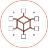
Бизнес как система
- Как построить системный бизнес и возможно ли это?
- Существует ли идеальная воронка, которая будет хорошо конвертить?
- Зачем считать точку безубыточности компании?
- Как сделать выручку в бизнесе прогнозируемой?
Что будем изучать?
- Общие принципы системного бизнеса: построение сильной команды, управление на основе показателей, системный маркетинг и продажи, качественный продукт
- Анализ и сравнение воронок: плюсы, минусы и построение автовебинарной, марафонной, блогерской, гибридной и каскадной воронок
- Составление декомпозиции запуска и расчет финансовой модели
- Юнит-экономика: определение точек безубыточности компании и продуктов
Результат
- Поймете, как построить систему в текущем проекте и сделать выручку ежедневной и прогнозируемой
- Узнаете, какие виды воронок существуют и как выбрать подходящую для своей ниши и аудитории
- Научитесь простраивать CJM (путь клиента) и воронки, находить в них неоптимальности и считать упущенную выгоду
- Научитесь составлять декомпозицию и считать финансовую модель запуска
- Сделаете доходы и расходы своего бизнес прозрачными и прогнозируемыми
Дополнительные материалы
- Карта всех видов воронок для онлайн-школ
- Таблица декомпозиции и финансовой модели запуска
- Примеры CJM (пути клиента) по всем видам воронок
- 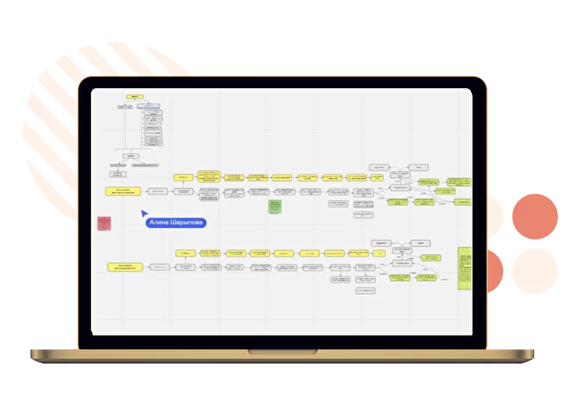
Модуль 4
Команда
- Как выстроить такую воронку найма, чтобы вакансия закрывалась в кратчайшие сроки?
- Как нанимать чемпионов, а не сотрудников, которые сливают ваши задачи?
- Как перестать контролировать каждого сотрудника?
- Как не переплачивать сотрудникам?
- Как сделать так, чтобы хорошие кандидаты хотели работать именно у вас?
Что будем изучать?
- Создание организационной структуры онлайн-школы — кто и за что отвечает
- Построение эффективной воронки найма: вакансии, собеседования, адаптация
- Построение команды чемпионов: топ-менеджмент и линейные сотрудники. Как нанимать и растить чемпионов?
- Как делегировать самые сложные функции, чтобы они не проседали — маркетинг, смыслы, продажи и продукт
- Материальная и нематериальная мотивация удаленной команды — сколько платить руководителям и остальным сотрудникам
- Построение HR-бренда и корпоративной идеологии
Результат
- Построите базовую и продвинутую организационные структуры вашего бизнеса
- Построите эффективную воронку найма
- Поймете, как и каких чемпионов нанимать в команду, чтобы вы были готовы им делегировать
- Научитесь писать вакансии, на которые откликаются целевые кандидаты
- Узнаете, как создавать материальные и нематериальные мотивации в команде
- Поймете, как обезопасить бизнес от недобросовестных сотрудников
Дополнительные материалы
- Шаблоны и примеры хороших продающих вакансий
- Конструктор вакансий
- Шаблон мотиваций ключевых сотрудников компании
- Примеры нематериальной мотивации сотрудников
- Примеры воронок найма
- 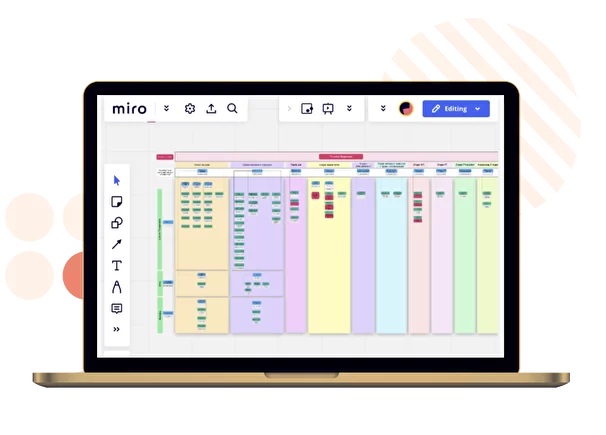
Модуль 5
Исследование целевой аудитории
- Как находить ответы на любые вопросы благодаря клиентам?
- Как применять данные из исследования целевой аудитории на всех этапах запуска?
- Как проводить интервью так, чтобы доставать из них «золото», а не банальную информацию?
- Как формулировать продающие смыслы, чтобы отличаться от конкурентов?
- Как делегировать проведение исследования целевой аудитории и конкурентов, чтобы не упало качество?
Что будем изучать?
- Исследование рынка и целевой аудитории: почему этот этап нельзя пропускать и зачем это нужно продюсеру
- Формирование целей исследования и гипотез о потребностях аудитории
- Проведение качественных и количественных исследований.
- Технология выявления небанальных болей
- Применение исследования целевой аудитории на всех этапах запуска курса
- Создание смыслов для офферов, прогревов, вебинаров, текстов рассылок из исследования целевой аудитории
- Создание бесплатных продуктов для целевой аудитории
- Построение отдела исследований внутри компании
Результат
- Поймете, как исследование влияет на результаты запуска
- Узнаете, как общаться с потенциальными клиентами и как задавать им правильные вопросы, ответы на которые сформируют понимание потребностей и болей целевой аудитории
- Научитесь работать с глубокими смыслами: выявлять небанальные боли и потребности аудитории
- Сможете использовать результаты исследования для всех своих целей — тест спроса на продукт, качественные офферы, креативы, прогревы и продающие вебинары
Дополнительные материалы
- Примеры хороших анкет и списков вопросов для исследования
- Методическое пособие по составлению вопросов и проведению глубинных интервью
- Методическое пособие по созданию анкеты для количественного исследования
- Внутреннее исследование компании Татьяны Маричевой об особенностях запусков в более чем 15 нишах
- 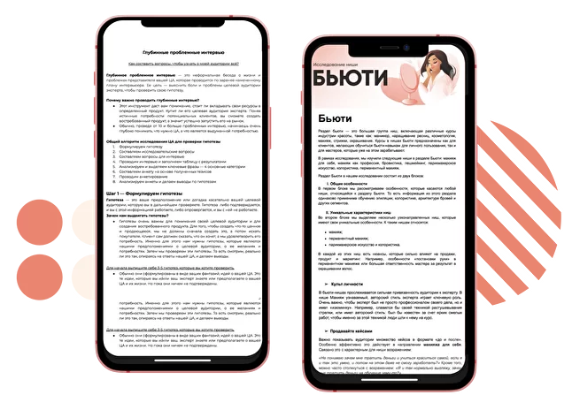
Модуль 6
Продукт
- Как создать продукт, который будет хорошо продаваться?
- Как доводить учеников до результата и получать большое количество положительных отзывов и кейсов?
- Как постоянно обновлять курс и добавлять новые фишки, не перезаписывая уроки?
- Куда вести клиентов после флагманского курса?
- Как выстроить идеальную продуктовую матрицу и увеличить доход с клиента?
- Как освободить время эксперта от проверки домашних заданий и ответов в чате?
- Как и где искать команду продукта и что им можно делегировать?
Что будем изучать?
- Формирование маркетинговой программы курса и продуктового обещания
- Составление архитектуры курса
- Повышение доходимости до конца курса, конверсии учеников в кейс, NPS и CSI
- Механики геймификации
- Как внедрять нововведения и новые фишки в продукт на основе постоянного CustDev без участия эксперта
- Построение системы сбора отзывов и кейсов
- Работа с возвратами и сложными клиентами на обучении
- Команда сервиса. Какие образовательные роли нужны на вашем курсе, как их нанимать, обучать и держать высокие показатели удовлетворенности обучением
- Построение идеальной продуктовой матрицы, чтобы клиент совершал повторные покупки в компании
Результат
- Разработаете маркетинговую программу курса и продуктовое обещание
- Поймете, какие образовательные роли нужны для того, чтобы ваши ученики достигали результата
- Поймете, какие механики нужно внедрить в обучение, чтобы повысить доходимость и лояльность клиентов
- Оцифруете продуктовые и сервисные показатели и научитесь на них влиять
- Узнаете, как собирать качественные кейсы
- Поймете, как внедрять нововведения в продукт на основе отзывов и общения с клиентами
- Узнаете, как построить продуктовую матрицу и повысить LTV клиента
Дополнительные материалы
- Примеры качественных маркетинговых программ
- Пример составления архитектуры курса
- Примеры анкет для сбора обратной связи и показателей
- Чек-лист сбора кейсов
- Чек-лист вопросов для CustDev учеников
- Таблица оцифровки и сбора показателей
- Пример вакансии и тестовых заданий для руководителя продукта, методолога, куратора
- Примеры мотиваций всех сотрудников отдела продукта и сервиса
- 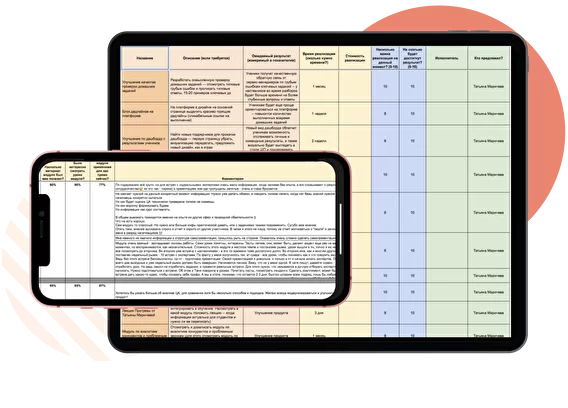
Защита проекта
Содержание учебного проекта
- Исследование целевой аудитории в одной из популярных рыночных ниш / ниши вашего эксперта(компании)
- Аудит 3 воронок продаж
- Аудит продающего вебинара и продукта
- Декомпозиция и финансовая модель запуска
- План запуска в диаграмме Ганта и таск-менеджере
Модуль 7
Маркетинг
- Как быстро оцифровать все показатели в отделе маркетинга в понятную систему?
- Где брать трафик в новых реалиях и какие триггеры сейчас работают?
- Как нанять таргетологов, способных эффективно работать с большим бюджетом и уменьшать цену регистрации?
- Как эффективно работать с базой и повышать открываемость писем?
- Как масштабировать трафик, удерживая ключевые показатели на прежнем уровне?
- Как нанять эффективного маркетолога, сколько ему платить и существуют ли они вообще?
Что будем изучать?
- Управление показателями в маркетинге через аналитику: маркетинговый отчет, декомпозиция, юнит-экономика, план-факт
- Найм эффективных маркетологов: где их искать, как контролировать, какие у них обязанности и KPI
- Работа со смыслами как фундамент отдела маркетинга:
- Зачем создавать карту смыслов. Работа с картой на всех площадках
- Как использовать анализ целевой аудитории для создания цепляющих офферов, высококонверсионных лендингов, лид-магнитов
- Как доносить ценность продукта и не выжигать базу агрессивными продажами
- Как с помощью качественного контента превратить холодного клиента в теплого
- Воронки:
- Как построить идеальную воронку: выбираем подходящую под проект воронку и считаем показатели на каждом этапе пути клиента
- На какие показатели смотреть для принятия верных управленческих решений
- Трафик:
- Работа с холодным трафиком: вебинары, марафоны, блогеры
- Работа с теплым трафиком: прогревы, база
- Как масштабировать трафик: увеличение бюджетов, новые каналы трафика, блокировки
- Новые тренды работы с трафиком
- Построение отдела трафика: как нанять руководителя отдела трафика, который заинтересован в нужных вам показателях, а не только в проценте от бюджета
Результат
- Наймете эффективного маркетолога в команду
- Построите или улучшите свои существующие воронки
- Простроите CJM — визуализацию пути вашего клиента по воронке
- Узнаете, как повышать конверсии на всех этапах касания с клиентом
- Поставите тестирование новых гипотез в маркетинге на поток
- Научитесь грамотно доставать смыслы для офферов, сайтов и лид-магнитов из анализа целевой аудитории
- Выстроите отдел трафика, который управляет рекламными бюджетами на основе показателей
Дополнительные материалы
- Примеры конверсионных лендингов
- Чек-лист составления продающего оффера
- Разборы прогревов
- Шаблон и скринкаст заполнения маркетингового отчета
- Шаблон и скринкаст заполнения когортного анализа
- Шаблон и скринкаст заполнения декомпозиции
- Примеры вакансий маркетолога, руководителя отдела трафика и таргетологов
- Примеры мотиваций сотрудников отдела маркетинга
- 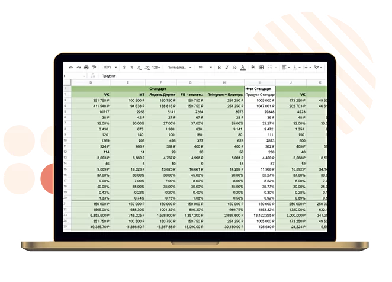
Модуль 8
Вебинар
- Как составить идеальную структуру продающего вебинара?
- Какие фишки и приемы использовать в продающей части, чтобы увеличить конверсию вебинара
- Как закрывать возражения на вебинаре?
- Как подготовить эксперта к вебинару, чтобы он провел его на высокой энергии и не слил бюджет, который вы вложили в рекламу?
- Что делать при высокой цене регистрации и низкой доходимости?
Что будем изучать?
- Продающие смыслы из анализа целевой аудитории и формулирование цепляющего оффера для вебинара
- Контент на вебинаре: какой контент готовить к вебинару и как его делить между окнами продаж
- Окна продаж: как их проектировать и встраивать мягкий переход к ним
- Как захватывать и удерживать внимание аудитории до конца вебинара
- Подготовка эксперта к выступлению: работа с эмоциональным состоянием, энергией, речью
- Работа над конверсией вебинара: почему нет оплат и как на это повлиять
Результат
- Научитесь формулировать продающие смыслы и правильно доносить ценность продукта до своей целевой аудитории
- Научитесь распаковывать экспертность и структурировать контент
- Узнаете фишки продающей части, которые увеличат конверсию и сделают продажу интересной
- Поймете, как вовлекать аудиторию и удерживать ее внимание до конца вебинара
- Узнаете, как готовить спикера к эфиру
- Научитесь создавать высококонверсионные вебинары, из которых легко сделать автовебинар
Дополнительные материалы
- Шаблон распаковки эксперта перед вебинаром
- Шаблон презентации со структурой вебинара
- Карточки приемов на вебинарах
- Примеры хороших продающих вебинаров с разборами от экспертов
- Чек-лист технической готовности вебинара
- Шаблон маркетингового отчета
- 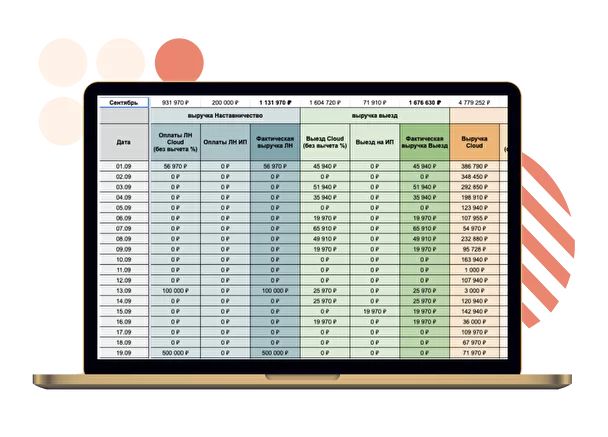
Модуль 9
Продажи
- Как самому не заниматься построением и контролем отдела продаж?
- Как быстро нанимать менеджеров по продажам, которые выполняют план?
- Как вывести на линию 20 менеджеров по продажам за неделю?
- Как сделать так, что менеджеры не сливали лидов?
- Сколько платить менеджерам и как составить эффективную мотивацию отделу продаж?
- Как адаптировать сотрудников отдела продаж, чтобы они не сливались с первого дня стажировки?
- Как составить эффективный план продаж?
- Как все это контролировать?
- Как нанять РОПа в отдел продаж и сколько ему платить?
Что будем изучать?
- Построение отдела продаж
- Роль собственника в построении отдела продаж
- Когда нужно строить отдел продаж и какие структуры отдела существуют
- Построение эффективной воронки найма менеджеров отдела продаж: поиск,собеседование, обучение, вывод на линию
- Скрипты отдела продаж и работа с возражениями
- Материальная и нематериальная мотивация сотрудников отдела продаж
- Когда и как нужно нанимать руководителя отдела продаж: найм, функционал, отчетность
- Построение отдела контроля качества
- Построение отдел контроля качества — когда, зачем он нужен и какие задачи для бизнеса он решает
- Эффективное взаимодействие с отделом продаж
- Отчеты отдела контроля качества
- Найм сотрудников ОКК: где искать, как учить и сколько стоят такие сотрудники
Результат
- Выстроите систему найма руководителей и менеджеров отдела продаж
- Поймете, какие показатели отдела продаж необходимо считать, чтобы выполнять планы
- Построите эффективную материальную и нематериальную мотивацию сотрудников отдела продаж
- Построите отдел контроля качества
- Узнаете, как выстроить эффективное взаимодействие ОКК и ОП
Дополнительные материалы
- Примеры регламентов работы сотрудников отдела продаж и отдела контроля качества
- Примеры скриптов и отработки возражений
- Примеры мотиваций РОПа
- Примеры мотиваций МОПа
- Пример адаптации менеджеров отдела продаж
- Примеры мотиваций ОКК
- Чек-лист оценки звонков для ОКК
- Обзор CRM-систем
- 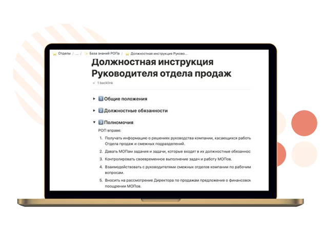
Модуль 10
Система и аналитика
- Как сделать так, чтобы при масштабировании компания не превращалась в хаос?
- Как держать руку на пульсе благодаря оцифровке всех процессов в компании и удобной системе отчетов?
- Как делегировать систематизацию процессов?
- Как сделать так, чтобы все важные документы и таблицы находились в одном месте?
- Как с помощью дашбордов уделять контролю показателей несколько минут в день?
Что будем изучать?
- Регламенты и инструкции онлайн-школы: когда можно и нужно их начать писать
- Построение отдела контроля качества
- Система отчетности в онлайн-школе — как и какие показатели нужно ежедневно отслеживать?
- Создание единой базы знаний для сотрудников
- Создание дашбордов и схем бизнес-процессов
- Внедрение сквозной аналитики в компании
Результат
- Создадите mindmap-карту ключевых процессов вашего бизнеса
- Опишите регламенты и инструкции работы сотрудников
- Создадите единую базу знаний в Notion
- Поймете, как создать сквозную аналитику в компании
Дополнительные материалы
- Примеры дашбордов
- Единая система отчетности для онлайн-школ
- Шаблоны регламентов и инструкций основных процессов онлайн-школы
- Обучение по работе в Notion
- 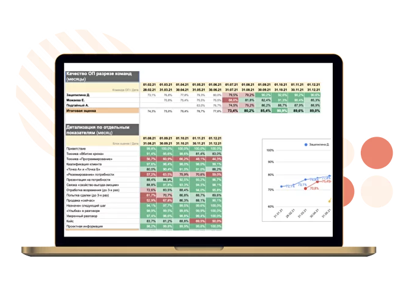
Модуль 11
Финансы
- Как сделать цифры прозрачными и не бояться их?
- Как избежать кассовых разрывов?
- Как планировать свой личный доход на несколько месяцев вперед?
- Как увеличить выручку компании и при этом уменьшить расходы?
- Как делегировать финансовый учет?
Что будем изучать?
- Как правильно считать прибыль и когда ее можно выводить из бизнеса
- Годовое планирование: составление финансовой модели бизнеса
- Финансово-управленческий учет: прозрачное ведение денежных средств в компании
- Создание резервного фонда
- Формы ведения бизнеса, платежи и счета
- Сервисы для финансового учета
Результат
- Выстроите прозрачную систему учета денежных средств
- Научитесь планировать финансы на год вперед
- Оптимизируете расходы бизнеса
- Обезопасите бизнес с точки зрения финансов
- Поймете, как предусмотреть кассовый разрыв и что делать, чтобы он не случился
Дополнительные материалы
- Шаблон ДДС
- Шаблон План-факт
- Шаблон P&L
- Шаблон финансовой модели
- 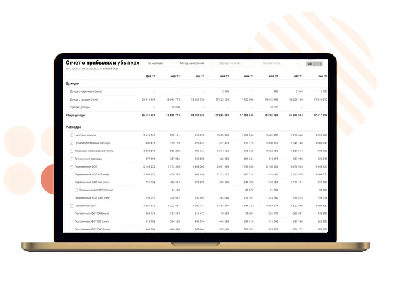
Модуль 12
Партнерские отношения
- Как повысить ценность продюсера в компании?
- Как говорить с партнером об изменениях условий, чтобы это не перерастало в скандалы и обесценивание?
- Как укрепить отношения с партнером, чтобы работать вдолгую?
- Как решать конфликтные ситуации между партнерами?
- Как защитить свои активы в случае расхода с партнером?
Что будем изучать?
- Повышение самоценности продюсера
- Проведение эффективных переговоров для изменения условий партнерства
- Преодоление конфликтных ситуаций в партнерстве
- Оценка интеллектуальной собственности и вложений
- Депонирование авторских прав, лицензионный договор, договор о совместной деятельности
Результат
- Научитесь договариваться с партнером на выгодные для вас условия
- Пропишете условия партнерства на бумаге и избежите «забывчивости» со стороны партнера
- Поймете, как укрепить партнерские отношения
- Оцените интеллектуальную собственность и вложения каждого из партнеров
- Заключите все необходимые договоры для безопасности отношений
- Поймете, как выйти из проекта с наименьшими потерями в случае необходимости
Дополнительные материалы
- Список вопросов для выявления сильных и слабых сторон партнерства
- Модуль о продюсерах для вашего эксперта
- Шаблон лицензионного договора
- Шаблон партнерского соглашения
- Шаблон о совместной деятельности
- Шаблон защиты авторских прав